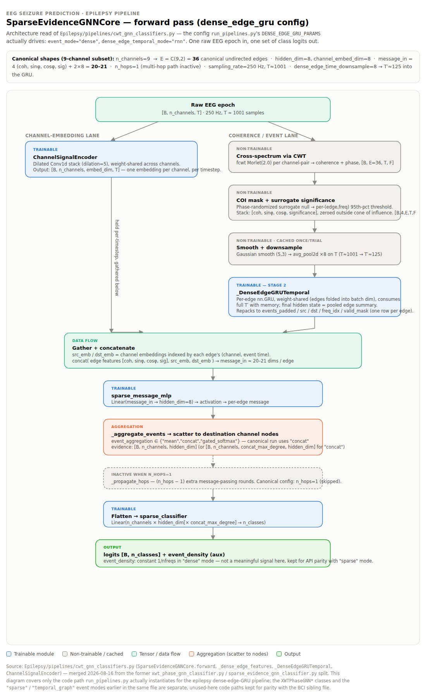

I work on wavelet coherence methods for non-stationary signals, and how to fold them into graph- and sequence-based ML architectures. Currently leading a small independent research team building a graph neural network + GRU model for EEG-based epileptic seizure prediction. Author of a peer-reviewed IEEE publication on real-time wavelet coherence architecture.

Scalable Real-Time Wavelet Coherence Architecture. N. Shore, IEEE 14th International Symposium on Image and Signal Processing and Analysis (ISPA), Oct. 2025.
View publication →Wavelet-Based Time-Frequency Fingerprinting for Feature Extraction of Traditional Irish Music. Published on arXiv, 2025.
View publication →